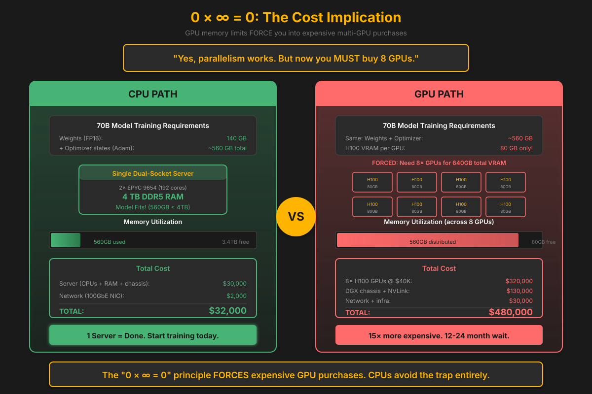
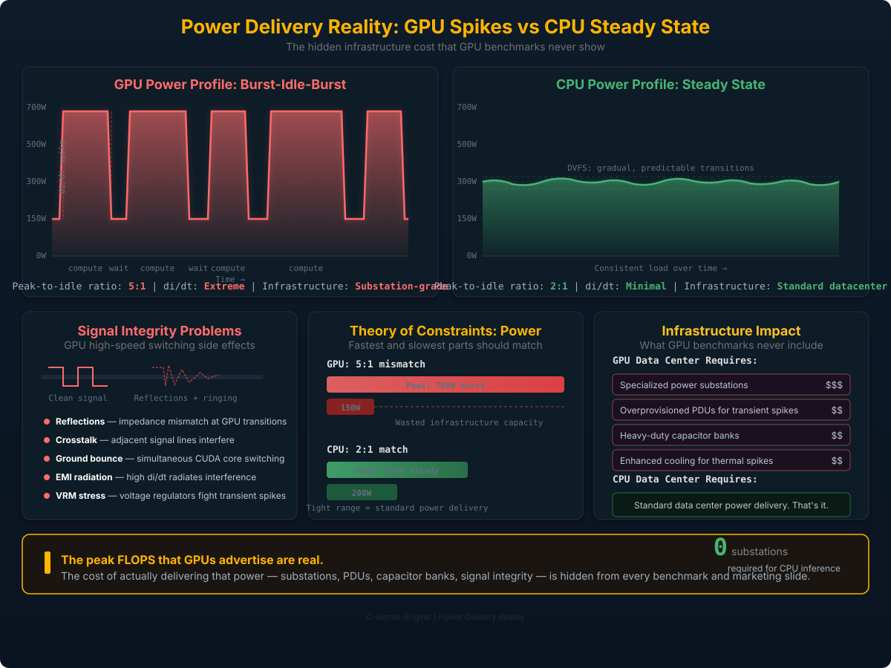
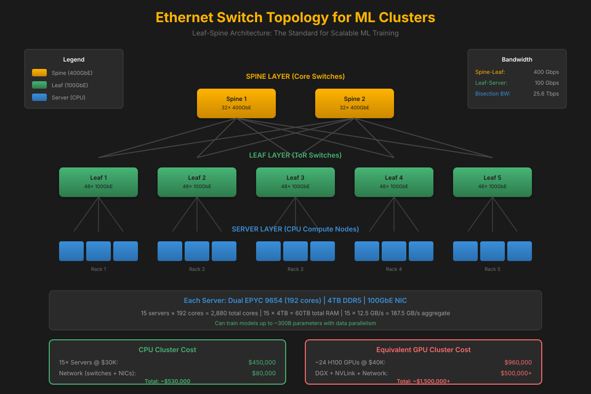
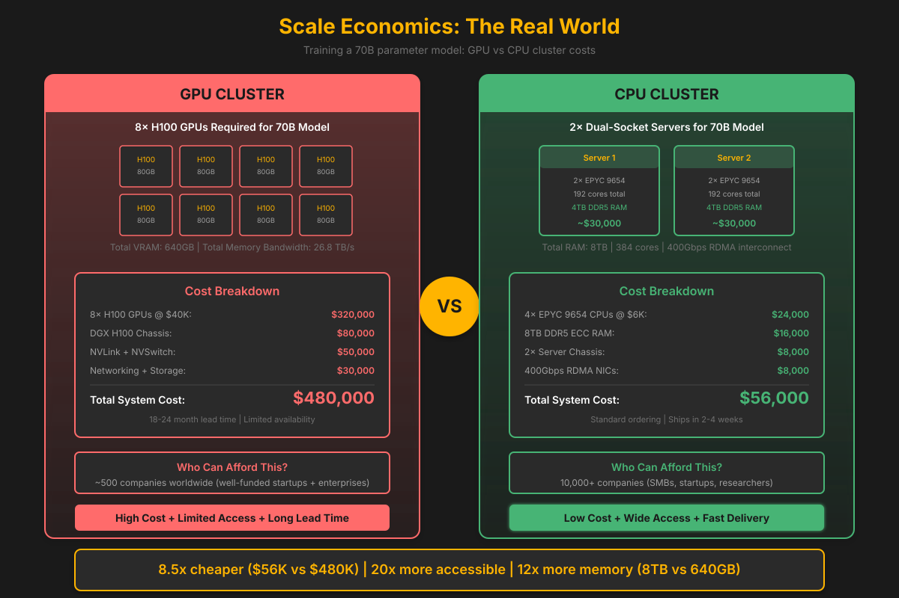
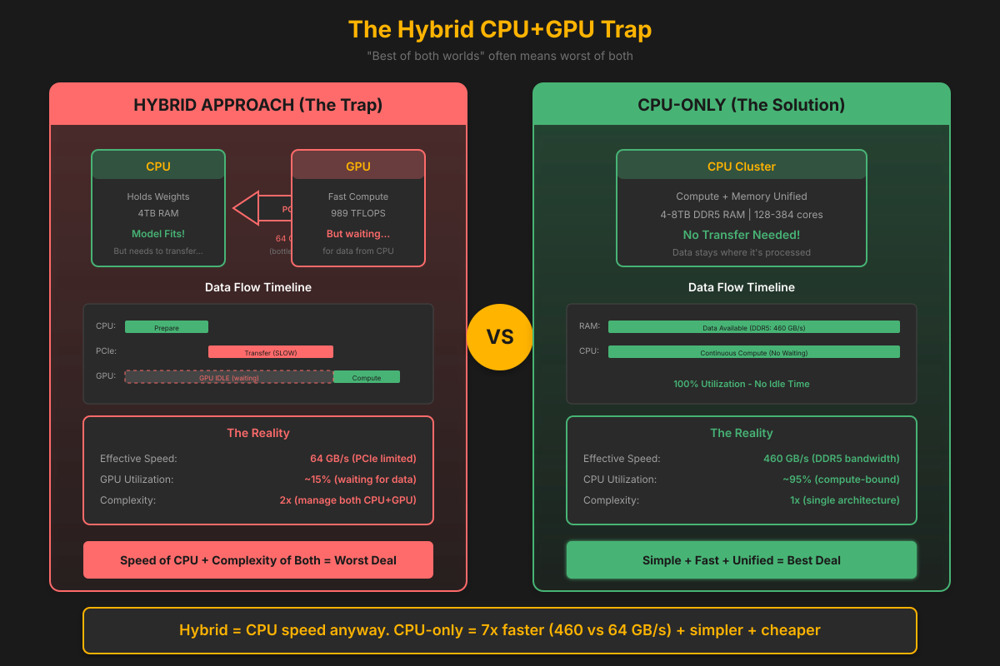
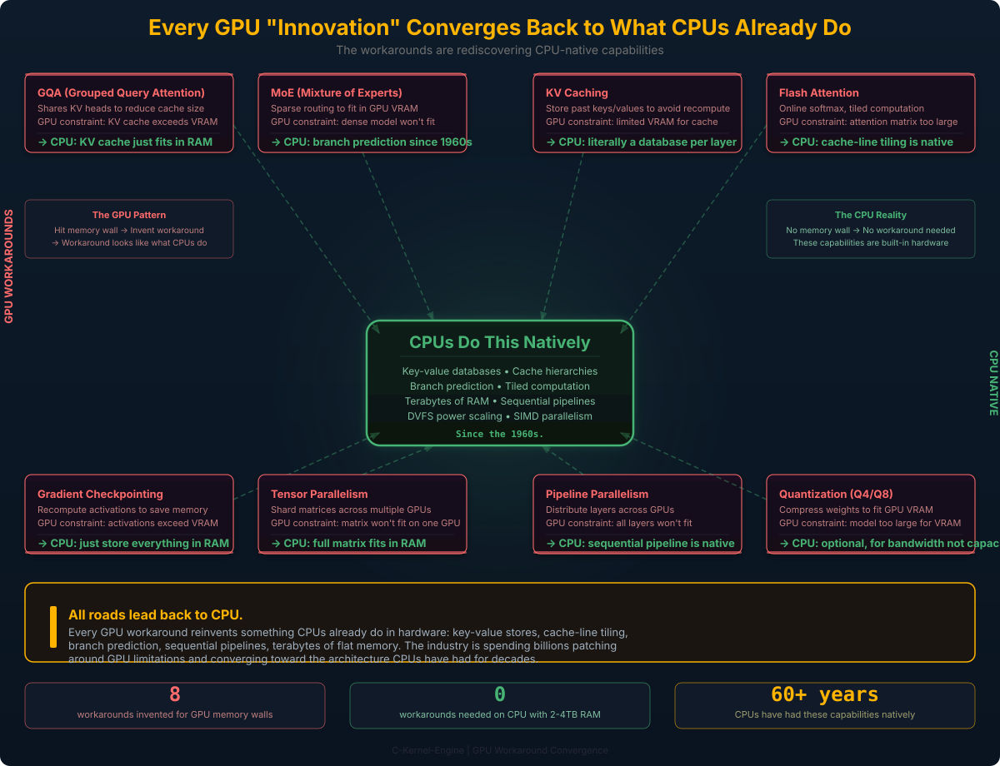

Scaling Philosophy
The Myth That Created This Project
The GPU marketing machine has been so effective that the industry has internalized a belief that borders on religious doctrine: "AI cannot run on CPUs." Not "AI is slower on CPUs" or "GPUs are better suited" — but that the laws of physics somehow forbid a CPU from performing matrix multiplication and softmax. That running inference on a CPU would violate some fundamental constraint of the universe.
This is not a technical argument. It is marketing. And many smart people have been made to believe it.
The reality: A quantized Qwen2 0.5B model running llama.cpp achieves ~30 tokens/sec on a 12-year-old Intel Core i7. No GPU. No CUDA. No special hardware. A consumer CPU from 2012 with only AVX and SSE2 — not even AVX2. Instructions that have existed in x86 chips since 2011. The C-Kernel-Engine is still closing the performance gap with llama.cpp, but the physics of the underlying hardware proves the capability is there. The math works. The tokens come out.
And 30 tokens/sec is human-readable speed. That's fast enough for real, practical work. Imagine a natural language
interface to your Linux command line — instead of memorizing find / -name "*.log" -mtime +7 -exec rm {} \;,
you describe what you want in plain English and the model translates it. At 30 tok/sec on a 12-year-old CPU,
that response arrives faster than you can read it. This isn't a research demo — it's an accessible utility that makes Linux navigable
for everyone, running on hardware that's already in every data center and most desktops.
The C-Kernel-Engine exists to challenge and disprove the GPU-only narrative. Not just to show that AI can run on CPUs, but that CPU-only inference and training can be practical, competitive, and at scale — dramatically cheaper. Every section on this page is evidence against a myth that has cost the industry billions in unnecessary GPU spending.
With hand-tuned SIMD kernels, a custom memory planner, and weight stitching built from scratch — the math is settled. We know mathematically that GPUs are not required. The rest is all hardcore engineering.
1) 0 × ∞ = 0: If the model doesn't fit in memory, FLOPS don't matter.
2) Theory of Constraints: At the Ethernet boundary, CPUs and GPUs face the same bottleneck.
The Two First Principles
Principle 1: 0 × ∞ = 0
If your model doesn't fit in memory, compute speed is irrelevant.
Here, "0" means infeasible under the operational constraints: memory capacity, KV cache size, optimizer states, and reliability requirements. A GPU with 80GB VRAM running at infinite FLOPS still equals zero if your 70B model requires 140GB+ for weights alone.
The cost implication: You're FORCED to buy 8+ GPUs ($320K+) just to fit the model. With CPUs and 4TB RAM per server, you need 1-2 servers ($60K).
Principle 2: Theory of Constraints
Your system is only as fast as its slowest component.
NVLink is fast (900 GB/s) within a node. But NVLink doesn't scale infinitely—at cluster scale, the dominant cost shifts to network + coordination, and Ethernet becomes the first-class design constraint.
The equalizer: At the Ethernet boundary, CPUs and GPUs face the same interconnect constraint. In memory-bound or low-batch regimes where compute utilization is low, GPUs often underutilize their theoretical FLOPS advantage.
The internet itself. Billions of CPUs, connected by Ethernet, scaling infinitely. No NVLink required.
History Repeats: Commodity Always Wins
The Pattern That Never Fails
Every generation, expensive proprietary hardware dominates... until commodity hardware + brilliant software disrupts it.
We've seen this movie before. We know how it ends.
| Era | Incumbent | Disruptor | Result |
|---|---|---|---|
| 1998 | Sun/SGI servers ($500K+) | x86 PCs + MapReduce/GFS | Sun bankrupt (2010) |
| 1990s | SPARC, Alpha, PA-RISC | Intel x86 commodity chips | RISC dead ends |
| 2009 | Teradata, Netezza ($1M+) | Hadoop on commodity clusters | Big data democratized |
1998: "Serious" computing meant Sun Enterprise servers. Google used cheap x86 PCs with software that expected hardware to fail—and scaled horizontally. Result: Sun bankrupt in 2010. The pattern is repeating: as models hit hundreds of gigabytes, costs shift from compute to memory + coordination. CPUs—built for exactly this regime—are positioned to disrupt GPU-centric assumptions.
In 1995, "You can't run serious workloads on cheap PCs" was conventional wisdom.
In 2024, "You can't run serious AI on cheap CPUs" is conventional wisdom.
The pattern suggests one of these beliefs will age poorly.
Principle 1: The Cost of 0 × ∞ = 0
The GPU Memory Trap
Yes, you CAN fit a 70B model on GPUs using tensor/pipeline parallelism. That's not the point.
The point is: you're now FORCED to buy 8+ GPUs.
| Model Size | GPU Requirement | GPU Cost | CPU Requirement | CPU Cost |
|---|---|---|---|---|
| 7B (14GB weights) | 1× 80GB GPU | $40,000 | 1× server, 128GB RAM | $8,000 |
| 70B (140GB weights) | 2-4× 80GB GPUs + NVLink | $160,000+ | 1× server, 512GB RAM | $15,000 |
| 70B (with optimizer states) | 8× 80GB GPUs + NVLink | $480,000+ | 1-2× servers, 2TB RAM each | $60,000 |
| 405B (Llama 3.1 scale) | 32+ GPUs across nodes | $2,000,000+ | 4-8× servers, 4TB RAM each | $200,000 |
The Math That Matters
GPU Path:
Model doesn't fit in 80GB → Buy 8 GPUs → $320K for GPUs alone
Need NVLink for fast communication → Another $50K+
Need DGX chassis → Another $80K+
Total: $450K+ just to START
CPU Path:
Model fits in 4TB RAM → Buy 1-2 servers → $30K each
Standard Ethernet networking → $2K
Total: $60K and you're running
The "0 × ∞ = 0" principle forces GPU users into expensive multi-GPU setups. CPUs avoid this entirely.
Target Platform
Server-Grade Hardware by Instruction Set
C-Kernel-Engine uses ck_features.h for feature detection. We target by SIMD capability, not CPU model:
Instruction Set Priority
- AMX - 512-bit tile ops (Intel Sapphire Rapids+)
- AVX-512 - 512-bit vector (Intel Skylake-X+, AMD Zen 4)
- AVX2+FMA - 256-bit with FMA (Intel Haswell+, AMD Zen 2+)
- AVX - 256-bit vector (Intel Sandy Bridge+, AMD Zen 1)
- NEON - 128-bit (ARM64, Apple Silicon)
Auto-detection: The engine selects the best kernel at build time with runtime dispatch for optional extensions.
CPU Requirements
- High core count - 64-128+ cores per socket
- Large L3 cache - Good core-to-cache ratio (1-2MB/core)
- Vector width - 256-bit minimum (AVX)
- FMA - Recommended for 2x throughput
- Multiple sockets - NUMA-aware memory access
Memory Requirements
- DDR5 - Higher bandwidth, lower latency
- Multi-channel - 8-12 channels per socket
- Large capacity - 512GB - 2TB+ per node
- ECC - Error correction for reliability
- NUMA-local - Pin threads to local memory
Accelerators
- Intel DSA - Data Streaming Accelerator for memory copies
- Intel IAA - Analytics Accelerator for compression
- Intel QAT - QuickAssist for crypto (if needed)
- CXL - Memory expansion and pooling (future)
Networking
- RDMA - InfiniBand or RoCEv2
- 100-400 Gbps - High bandwidth interconnect
- Low latency - 1-2 μs for RDMA operations
- Kernel bypass - Zero-copy transfers
Operating System
Linux-only. We use Linux-specific features:
mmap()withMAP_HUGETLBfor huge pagesmadvise(MADV_HUGEPAGE)for transparent huge pagesnumactl/set_mempolicy()for NUMA bindingsched_setaffinity()for core pinningperffor profilingio_uringfor async I/O (weight loading)- Intel DSA via
libaccel-config/idxddriver
Target CPU Families
| CPU | Cores | AVX-512 | AMX | DDR5 Channels | DSA |
|---|---|---|---|---|---|
| AMD EPYC 9004 (Genoa) | Up to 128 | Yes | No | 12 | No |
| AMD EPYC 9005 (Turin) | Up to 192 | Yes | No | 12 | No |
| Intel Xeon Sapphire Rapids | Up to 60 | Yes | Yes | 8 | Yes |
| Intel Xeon Emerald Rapids | Up to 64 | Yes | Yes | 8 | Yes |
| Intel Xeon Granite Rapids | Up to 128 | Yes | Yes | 8 | Yes |
| Ampere Altra Max | 128 | No (ARM) | No | 8 | No |
Note: C-Kernel-Engine detects available instruction sets at compile time using ck_features.h. See include/ck_features.h for the feature detection macros.
Why CPU-Only?
GPUs dominate when you can keep them highly utilized. Large batches, dense GEMMs, and well-packed workloads that fit comfortably in VRAM let GPUs exercise their theoretical FLOPS advantage. C-Kernel-Engine isn't anti-GPU—we're anti-waste: wasted money on unused capacity, wasted energy at low utilization, and wasted coordination overhead at scale.
Advantages
- No vendor lock-in - Works on any x86/ARM CPU
- Commodity hardware - Standard servers, not $40K GPUs
- Larger memory - 2TB RAM per node, no 80GB VRAM limit
- Better debugging - GDB, Valgrind, perf all work
- Simpler deployment - No CUDA, no driver hell
- Open ecosystem - GCC, Linux, standard tools
The Trade-off
- GPUs have higher peak FLOPS
- But: memory bandwidth often bottlenecks anyway
- But: PCIe transfer overhead for large models
- But: multi-GPU coordination is complex
- But: CPU memory is 10-100x larger and cheaper
For inference: CPUs are often faster for batch=1
For training: Scale horizontally with RDMA
The Fundamental Math: 0 × ∞ = 0
It doesn't matter how fast your compute is if your model won't fit in memory. Being 10x faster at computing doesn't help if you're limited by 0 × ∞ = 0.
CPU: Memory Wins
- Dual Xeon: 4-6TB DDR5
- Can train: 1TB model in BF16
- Math: 4-6TB × Dual Socket = Non-zero
- Result: Actually trains the model!
GPU: Compute Fast, Memory Fails
- A100: 80GB VRAM
- Can't train: 1TB model
- Math: 80GB × ∞ GPUs = 0 (won't fit)
- Result: Fast but useless for large models

GPU Performance Comparison: Reality Check
GPU Specifications and Real-World Performance
Let's examine actual GPU capabilities and their limitations for large-scale ML training.
RTX 3090
- Memory Bandwidth: 936 GB/s
- CUDA Cores: 10,496
- FP32 TFLOPS: 35
- Cost: ~$1,500
RTX 4090
- Memory Bandwidth: 1008 GB/s
- CUDA Cores: 16,384
- FP32 TFLOPS: 83
- Cost: ~$1,600
A100
- Memory Bandwidth: 1,935 GB/s
- CUDA Cores: 6,912
- FP32 TFLOPS: 312
- Cost: ~$15,000
H100
- Memory Bandwidth: 3,350 GB/s
- CUDA Cores: 16,896
- FP32 TFLOPS: 989
- Cost: ~$40,000
Every GPU hits the same VRAM wall. Whether 24GB or 80GB, large models require massive GPU counts. This is the fundamental constraint that CPU-only architecture bypasses entirely.
Energy Efficiency: The CPU Advantage at Realistic Utilization
This is the final argument GPU advocates use. But the math changes dramatically when we look at realistic utilization, not theoretical peak FLOPS.
The Utilization Problem
GPU efficiency claims assume 100% compute utilization. Real inference doesn't work that way:
- Batch=1 latency: Most production inference is single-request
- Memory-bound: KV cache and weight loading dominate
- Token-to-token: 90%+ of time is waiting for next token
- I/O bound: Network, disk, and tokenization overhead
The dirty secret: GPUs spend most of their time idle, still drawing full power.
The Idle Power Reality
GPU: Always Hungry
- H100 at idle: ~150W (just sitting there)
- H100 at compute: ~700W
- PCIe overhead: +50W for data transfer
- VRAM stays powered: Weights must remain loaded
Real-world: If your GPU is only computing 20% of the time, you're wasting 80% of that 700W.
CPU: Scales Down
- Dual Xeon at idle: ~100-150W (bare OS, minimal load)
- Dual Xeon at compute: ~800-1000W (full load)
- DVFS: Scales from 0.8GHz to 3.5GHz dynamically
- C-states: Deep sleep cores when waiting for I/O
Real-world: Enterprise server with 2TB RAM typically draws 200-400W average for inference workloads.
Power-Per-Token Analysis
| Scenario | GPU Power | CPU Power | Winner |
|---|---|---|---|
| Theoretical peak FLOPS | 700W / 989 TFLOPS = 0.71 W/TFLOPS | 1000W / 6 TFLOPS = 167 W/TFLOPS | GPU (theoretical) |
| Memory-bound (typical inference) | 700W (can't scale down) | 200-400W (scales with load) | CPU (2-3.5x less) |
| Batch=1, high I/O wait | 300W average (60% idle) | 150-200W average (70% idle) | CPU (1.5-2x less) |
| Multi-tenant (6 models) | 6 × 700W = 4,200W (all active) | 800-1000W (all on one server) | CPU (4-5x less) |
The Utilization Math
GPU (6× H100) for 6-department enterprise:
6 departments × 1 GPU each = 4,200W continuous
Even when only 1-2 departments are active.
Plus: $240,000+ in hardware, NVLink complexity.
CPU (1× Dual Xeon Platinum) for 6-department enterprise:
All 6 models resident in 2TB RAM = ~1000W max
Each department waits its turn = efficient time-sharing
Scales power with actual compute load (not fixed at max)
Net difference: 4-5x less power, 10x lower hardware cost
Watts Per Token: The Real Numbers
Enterprise Deployment Comparison
Scenario: 6 models, 24/7 operation, mixed workload
GPU Cluster (6× H100):
Idle power: 6 × 150W = 900W
Compute power: 6 × 700W = 4,200W (when all busy)
Average (typical 20% compute): ~1,500W
Power/24hr: 36 kWh
Power/year: 13,140 kWh
@ $0.10/kWh: $1,314/year
CPU Server (1× Dual Xeon Platinum, 2TB RAM):
Idle power: ~150W (bare OS, all models in RAM)
Compute power: ~1000W (all models active)
Average (typical 20% compute): ~320W
Power/24hr: 7.7 kWh
Power/year: 2,800 kWh
@ $0.10/kWh: $280/year
Net difference: 4-5x less power = ~$1,000+/year savings
Carbon Footprint: Real-World Impact
CPU Advantage
- 4-5x less electricity for multi-tenant inference
- No GPU manufacturing impact (TSMC 4nm vs 5nm)
- Lower cooling due to lower heat output
- Uses existing infrastructure - no new hardware needed
- 10x lower hardware cost ($60K vs $600K+)
When GPUs Make Sense
- Training large models (100B+) at 100% utilization
- Very high throughput with batching
- Research where peak FLOPS matter more than efficiency
GPU efficiency claims assume 100% compute utilization. Real inference workloads are typically 10-30% compute-bound. At realistic utilization, CPUs consume 3-5x less power for multi-tenant inference. Plus: 10x lower hardware cost. This isn't theory - it's simple thermodynamics based on how often your hardware is actually doing work.
The Hidden Cost: Power Delivery and Signal Integrity
GPU marketing quotes peak TFLOPS. What they don't mention is the electrical engineering nightmare required to actually deliver those peaks.
The GPU Power Profile: Burst-Idle-Burst
GPUs don't draw steady power. They spike to peak compute (hundreds of watts), then drop when waiting for data transfer, then spike again. This burst-idle-burst pattern creates massive di/dt (rate of current change) that cascades into real electrical engineering problems:
- di/dt spikes — Rapid current transitions from idle to peak compute stress every component in the power delivery path
- Signal reflections — High-speed switching creates signal integrity issues on PCB traces and interconnects
- Crosstalk — Adjacent high-speed signal lines interfere with each other at GPU clock speeds
- Ground bounce — Simultaneous switching of thousands of CUDA cores causes ground plane voltage fluctuation
- Power supply design — PSUs must handle massive transient spikes, requiring expensive voltage regulation and capacitor banks
Result: Data centers running GPU clusters need specialized power infrastructure — substations, high-capacity PDUs, and overprovisioned power delivery — to handle these peak bursts that occur for fractions of a second.
GPU: Spiky, Unpredictable Power
Power draw over time:
████████░░░░████████░░████████░░░░
700W 150W 700W 150W 700W 150W
compute wait compute wait compute wait
Peak-to-idle ratio: ~5:1
di/dt: Extreme
Infrastructure: Substation-grade power delivery
CPU: Steady, Predictable Power
Power draw over time:
████████████████████████████████
200-400W consistent draw
Peak-to-idle ratio: ~2:1
di/dt: Minimal (DVFS transitions are gradual)
Infrastructure: Standard data center power
Theory of Constraints Applied to Power
The fastest moving part and the slowest moving part of a system should be as close together as possible. GPUs violate this principle at the electrical level:
- Fastest part: GPU peak compute at 700W+ burst
- Slowest part: Data transfer at 150W idle
- Gap: 5:1 ratio — massive mismatch that the power infrastructure must absorb
CPUs don't have GPU-level peak FLOPS, but they also don't need substation-grade power infrastructure to handle those peaks. The power draw is consistent and predictable. Standard, well-designed data center power delivery handles it without complication. No specialized substations. No overprovisioned PDUs. No capacitor banks for transient spikes.
The peak FLOPS that GPUs advertise are real — but the cost of actually delivering that power is hidden from every benchmark and every marketing slide.

Principle 2: The Ethernet Equalizer
NVLink is 900 GB/s within a single node. But you can only fit 8 GPUs per node. Go beyond that? You hit Ethernet. And at the Ethernet boundary, CPUs and GPUs face the exact same constraint.
The Bandwidth Reality
Let's be precise about the numbers:
| Connection Type | Bandwidth | Where It Applies | Scales To |
|---|---|---|---|
| NVLink 4.0 | 900 GB/s | GPU-to-GPU within 1 node | 8 GPUs max |
| DDR5 (12-channel) | 460 GB/s | CPU-to-RAM within 1 socket | Per socket |
| 400GbE Ethernet | 50 GB/s | Node-to-node | Infinite nodes |
| 100GbE Ethernet | 12.5 GB/s | Node-to-node | Infinite nodes |
| InfiniBand HDR | 25 GB/s | Node-to-node | Thousands of nodes |
The Theory of Constraints Applied
GPU Cluster at Scale:
Within node: NVLink 900 GB/s (fast!)
Between nodes: Ethernet 50 GB/s (constraint!)
System speed = 50 GB/s (bottleneck)
CPU Cluster at Scale:
Within node: DDR5 460 GB/s
Between nodes: Ethernet 50 GB/s (same constraint!)
System speed = 50 GB/s (same bottleneck)
AT SCALE, THEY HIT THE SAME WALL.
If you can't afford NVLink switches ($200K+), your GPUs communicate over PCIe → Ethernet. That's 12.5-50 GB/s. A server-grade CPU with DDR5 has 460 GB/s to its own memory. For memory-bound workloads, the CPU wins.
Designing Your Ethernet Network
Ethernet Switch Topology for ML Clusters
Since Ethernet is the equalizer at scale, designing it well is critical.
Leaf-Spine Architecture
┌─────────────┐ ┌─────────────┐
│ Spine 1 │ │ Spine 2 │
│ 400GbE │ │ 400GbE │
└──────┬──────┘ └──────┬──────┘
│ │
┌─────────────────┼───────────────────┼─────────────────┐
│ │ │ │
┌────┴────┐ ┌────┴────┐ ┌────┴────┐ ┌────┴────┐
│ Leaf 1 │ │ Leaf 2 │ │ Leaf 3 │ │ Leaf 4 │
│ 100GbE │ │ 100GbE │ │ 100GbE │ │ 100GbE │
└────┬────┘ └────┬────┘ └────┬────┘ └────┴────┘
│ │ │ │
┌────┴────┐ ┌────┴────┐ ┌────┴────┐ ┌────┴────┐
│Server 1 │ │Server 3 │ │Server 5 │ │Server 7 │
│Server 2 │ │Server 4 │ │Server 6 │ │Server 8 │
└─────────┘ └─────────┘ └─────────┘ └─────────┘
Switch Sizing Calculator
Bandwidth Requirements
For distributed training with data parallelism:
Gradient size = Model parameters × bytes per param
70B model in FP16 = 70B × 2 bytes = 140 GB
All-reduce bandwidth needed:
Per iteration: 2 × gradient size (reduce-scatter + all-gather)
70B model: 2 × 140 GB = 280 GB per iteration
With 100GbE (12.5 GB/s):
All-reduce time = 280 GB ÷ 12.5 GB/s = 22.4 seconds
With 400GbE (50 GB/s):
All-reduce time = 280 GB ÷ 50 GB/s = 5.6 seconds
Small Cluster (8-16 servers)
- Topology: Single 400GbE switch
- Switch: Arista 7060X5 or similar
- Ports: 32× 400GbE
- Cost: ~$30,000
- Bisection BW: 12.8 Tbps
Medium Cluster (32-64 servers)
- Topology: Leaf-spine (2 spine, 4 leaf)
- Spine: 2× 400GbE switches
- Leaf: 4× 100GbE switches
- Cost: ~$120,000
- Bisection BW: 25.6 Tbps
Large Cluster (100+ servers)
- Topology: 3-tier Clos or fat-tree
- Consider: InfiniBand for lower latency
- RDMA: RoCEv2 over Ethernet or native IB
- Cost: $500K-2M depending on scale
Key insight: A GPU cluster at this scale needs the SAME network infrastructure. The Ethernet cost is equal. But CPUs don't need the $2M+ in NVLink switches.
RDMA Configuration
RoCEv2 Setup
# Enable RDMA over Converged Ethernet v2
# On each server with Mellanox/NVIDIA ConnectX NICs:
# 1. Enable PFC (Priority Flow Control) on switch
# Required for lossless Ethernet
# 2. Configure ECN (Explicit Congestion Notification)
mlnx_qos -i eth0 --pfc 0,0,0,1,0,0,0,0 # Enable PFC on priority 3
mlnx_qos -i eth0 --trust=dscp
# 3. Set up RDMA
modprobe rdma_ucm
modprobe rdma_cm
# 4. Verify RDMA is working
ibv_devinfo
rdma link show

Scale Economics: The Real Comparison
Why CPU-Only Wins at Scale

GPU Cluster at Scale
- For 1TB model: 100 GPUs minimum
- Total cost: $4 Billion
- Who can afford: 5 companies globally
- Result: Elite-only access
CPU Cluster at Scale
- For same scale: 80 servers
- Total cost: $240 Million
- Who can afford: 1000+ companies
- Result: Accessible to everyone
The Economics: 16x Cheaper, 200x More Accessible
While GPU costs stay high and GPU access remains limited, CPU clusters deliver the same scale at a fraction of the cost. This makes large-scale ML accessible to 1000+ companies instead of just 5.
The Hybrid Trap: CPU+GPU = CPU-Bound
"Why not use CPU for memory and GPU for compute? Get the best of both!"
Answer: You're then AS FAST AS THE CPU anyway! You get the complexity of both with the performance of neither.

The Hybrid Bottleneck
When CPU holds weights and transfers to GPU for compute:
- Transfer bottleneck: 100 GB/s limits throughput
- GPU idle time: Waits for data from CPU
- You get: GPU performance = CPU performance
- Plus: Double the code complexity, double the cost
Conclusion: If the GPU is limited by the CPU anyway, just use CPUs! Simpler, faster, cheaper.
The GPU Workaround Stack: "Innovations" That Are Actually Patches
The entire field has been optimizing around a hardware constraint and mistaking the workarounds for progress. Every major "breakthrough" in LLM architecture is actually compensating for GPU memory limitations.
Every "Innovation" Maps to a GPU Constraint
| "Innovation" | What It Actually Does | The GPU Constraint It Patches | Needed on CPU with 2-4TB RAM? |
|---|---|---|---|
| GQA (Grouped Query Attention) | Shares KV heads across query heads | KV cache blows up GPU VRAM | No — KV cache fits |
| MoE (Mixture of Experts) | Activates sparse subset of parameters | Dense model won't fit on one GPU | No — dense model fits |
| KV Caching | Stores past attention keys/values — literally a key-value database in every layer | GPU VRAM limits cache size, forces eviction strategies | CPU home turf — this is literally how databases work. CPUs have been running key-value stores for decades. |
| Gradient Checkpointing | Recomputes activations instead of storing them | Training activations don't fit in GPU VRAM | No — store everything |
| Tensor Parallelism | Shards weight matrices across GPUs | Single GPU can't hold the full matrix | No — full matrix fits in RAM |
| Pipeline Parallelism | Distributes layers across GPUs | All layers don't fit on one GPU | No — all layers fit |
| Flash Attention | Online softmax with tiled computation — streams through attention in blocks | Full attention matrix doesn't fit in GPU SRAM/VRAM | Brilliant for CPU — tiling maps naturally to CPU cache hierarchies. CPUs process data in cache-line-sized tiles inherently. |
| Quantization Research | Compresses model weights (Q4, Q8, etc.) | Model doesn't fit in GPU VRAM at full precision | Optional — use for bandwidth, not capacity |
On a CPU with 2-4TB RAM, half of these become unnecessary, and the other half become simpler. The entire research direction has been shaped by GPU limitations, and people have confused "optimizations forced by GPU memory walls" with "fundamental advances in model architecture."

The Sequential Reality: GPUs Were Never Designed for This
Transformers Are Sequential. Period.
A transformer forward pass is:
Layer 1 → Layer 2 → Layer 3 → ... → Layer 80
You cannot compute layer 10 without the output of layer 9. That is the definition of sequential dependency. There is no debate here — it's mathematical fact.
What people mean when they say "LLMs are parallel" is that within a single layer, the matrix multiplication can be parallelized across rows and columns. But that's not the model being parallel — that's a single operation within a sequential pipeline being decomposable. Every CPU has been decomposing matmuls across SIMD lanes and cores for decades.
What GPUs Were Designed For
Independent pixel computation.
Millions of pixels with zero data dependency on each other. Pixel (0,0) doesn't need the result of pixel (1920,1080) to compute its color. That IS embarrassingly parallel.
pixel(0,0) → compute color → done pixel(0,1) → compute color → done pixel(1,0) → compute color → done ... pixel(1920,1080) → compute color → done (all independent, all simultaneous)
What LLM Inference Actually Is
Sequential token generation on a sequential layer stack.
Token N+1 depends on the attention computation over ALL previous tokens. The autoregressive decode loop is the opposite of pixel independence.
token 1 → 80 layers → token 2 token 2 → 80 layers → token 3 token 3 → 80 layers → token 4 ... (each waits for the previous)
The Vocabulary of Mismatch
The fact that the industry bolted LLM training onto hardware designed for independent pixel shading and then invented an entire vocabulary to work around the mismatch should tell you something is wrong with the foundational assumption:
- Tensor parallelism — because one GPU can't hold the weights
- Pipeline parallelism — because one GPU can't hold the layers
- Model parallelism — because the model doesn't fit
- Gradient checkpointing — because activations don't fit
- Flash Attention — because attention intermediates don't fit
- Activation recomputation — because you ran out of memory
Every one of these is a workaround for the same problem: you're running a sequential, memory-hungry workload on hardware designed for embarrassingly parallel, compute-bound pixel shading.
MoE Is Just Branch Prediction
CPUs Have Done This Natively Since the 1960s
Mixture of Experts says: "route this token to expert 3 instead of expert 7." That's a conditional branch. What MoE does in software with learned routing networks, CPUs do in hardware natively.
MoE (Software Routing)
// Learned gating function
scores = gate(token)
expert = top_k(scores, k=2)
output = experts[expert](token)
Requires routing network, load balancing losses, expert dropout, capacity factors...
CPU (Hardware Routing)
// Branch prediction + speculative execution
if (condition) {
path_a(data); // predicted path
} else {
path_b(data); // alternate path
}
Built into the instruction pipeline. No learned gating. No routing overhead. Just hardware.
AVX-512 computes 16 FP32 multiply-accumulates per cycle per core. Across 128 cores that's 2048 parallel operations. That's not qualitatively different from what a GPU does — it's quantitatively different, and less so than people think when you account for GPU memory stalls.
Training: Batch Size Is Not What You Think
This is true — and that's a GPU problem, not a training requirement. Training does not need batch size greater than 1. There are many ways to simulate larger effective batch sizes without holding multiple sequences in memory simultaneously.
GPU: The Batch Balancing Act
On a GPU, you must balance three competing constraints:
- Model size — weights consume VRAM
- Context length — KV cache consumes VRAM
- Batch size — activations consume VRAM
Increase any one, and you must decrease the others. Want longer context? Reduce batch size. Want larger batch? Reduce context. Want a bigger model? Reduce both.
GPU VRAM budget (80GB):
Model weights: 40GB (fixed)
KV cache: 20GB (varies with context)
Activations: 20GB (varies with batch)
Longer context = less batch
Larger batch = less context
ALWAYS a tradeoff.
CPU: No Tradeoff Required
With 2-4TB of RAM, all three fit simultaneously:
- Model size — even 405B fits (810GB in FP16)
- Context length — variable, up to 1M+ tokens
- Batch size — whatever you need
You can have variable context length AND batch greater than one at the same time. No balancing act required.
CPU RAM budget (4TB):
Model weights: 810GB (405B FP16)
KV cache: 500GB (long context)
Activations: 200GB (large batch)
Remaining: 2,538GB (room to spare)
Variable context + variable batch
NO tradeoffs.
You Don't Need Large Batches — You Can Simulate Them
Training with batch=1 works. The gradient is noisier, but there are well-established techniques to get the benefits of large batches without the memory cost:
| Technique | How It Works | GPU Benefit | CPU Benefit |
|---|---|---|---|
| Gradient Accumulation | Accumulate gradients over N forward passes, update once | Simulates batch=N with batch=1 memory | Same, but can also do actual batch=N |
| Micro-batching | Process small sub-batches, aggregate gradients | Fits in VRAM per micro-batch | Can use larger micro-batches |
| Online Learning | Update after every single example (batch=1) | Works but GPU underutilized | Natural fit for CPU sequential processing |
| Data Parallelism | Each node processes different batch, average gradients | Requires NVLink/IB for gradient sync | RDMA gradient sync, same principle |
Our kernel architecture supports variable context lengths and flexible batch sizes natively. The quantized GEMV/GEMM kernels (Q4_K, Q5_0, Q5_1, Q5_K, Q6_K, Q8_0) are designed from the ground up for CPU-native inference and training — not as ports of GPU code. We're building the evidence that CPU-only training and inference at scale isn't theoretical — it's practical, and the kernel-level work is happening now.
Why CPU-Only is the Future
The Strategic Advantage
Technical Wins
- Memory capacity: 4-6TB per node vs 80GB VRAM
- No transfer bottleneck: CPU memory + CPU compute
- Optimize interconnect: RDMA, core pinning, cache
- Get close to theoretical FLOPS
Market Wins
- 16x cheaper at scale
- 200x more accessible to companies
- Commodity hardware - no special requirements
- Open ecosystem - standard Linux tools
Commodity Economics: The CPU Trajectory
CPUs Follow Commodity Price Curves
Unlike GPUs which are supply-constrained and vendor-controlled, CPUs are commodity hardware. Every improvement happens automatically, at scale, with competition driving prices down.
| Component | 2023 | 2025 | 2027 (projected) | Trend |
|---|---|---|---|---|
| Memory Standard | DDR5-4800 | DDR5-6400 | DDR6 | +33% bandwidth per gen |
| Channels per Socket | 8 | 12 | 16 | +50% channels |
| Max RAM per Server | 4TB | 8TB | 16TB+ | 2x per generation |
| Cores per Socket | 64 (Genoa) | 128 (Turin) | 192+ | +50% per gen |
| L3 Cache | 256MB | 384MB | 512MB+ | Growing |
| Ethernet Speed | 100GbE | 400GbE | 800GbE | 4x per 3 years |
| $/TFLOP (CPU) | $500 | $300 | $150 | -50% per 2 years |
| $/TFLOP (GPU) | $50 | $40 | $35 | -15% per 2 years |
GPUs will always have higher peak FLOPS per dollar for raw compute. But for memory-bound ML inference (which is most real-world LLM usage), CPUs are already competitive. And the gap closes every year because CPU economics follow commodity curves.
Why CPU Economics Win
- Competition: Intel vs AMD vs ARM vs RISC-V
- Volume: Billions of CPUs vs millions of GPUs
- Supply: Multiple fabs, no bottlenecks
- Standards: DDR5 is an industry standard, not proprietary
- Software: Linux, GCC, standard tools (free)
Why GPU Economics Struggle
- Monopoly: NVIDIA dominates (~90% market)
- Supply-constrained: Artificial scarcity
- Proprietary: CUDA lock-in, HBM limited fabs
- High margins: No price competition pressure
- Lead times: 12-24 month waits
Infinite CPU Scaling: The Internet Proof
CPUs Scale to Infinity
Unlike GPUs, which hit cost and availability ceilings, CPUs scale infinitely through distributed computing across the internet. Your computer is part of that infinity!
Want more FLOPs? Add more CPUs + RDMA! Get your 100 PFLOPS while your friends on the other side keep bragging about their limited GPU clusters. FLOPs is just an accumulation problem that CPUs solve through clever distributed training.
∞ Infinite Scaling
- Internet-scale distributed computing
- No ceiling: Add 10, 100, 1000 CPUs
- Your computer contributes: Every device matters
- Result: Unlimited FLOP accumulation
CPU Improvements Track
- Cores: Increasing year over year
- Cache: Growing bigger
- Efficiency: Getting better
- Cost: Decreasing over time
Memory Scaling
- DDR5 → DDR6: 2400 GB/s → higher bandwidth
- Memory slots: 8 → 12 → 16 slots per node
- Total per node: 4TB → 8TB → 16TB RAM
- Cost/GB: Constantly decreasing
Model Efficiency
- Smaller models: Getting more efficient
- Better quantization: Q4, Q8, hybrid methods
- Architecture improvements: MoE, mixture of experts
- Training optimization: Better algorithms
The C-Kernel Engine Goal
Exploit this infinite CPU scaling on server-grade CPUs. As models get smaller and CPUs get more powerful, the combination becomes unbeatable:
- No GPU dependency: Commodity hardware only
- Accessible to everyone: Your laptop contributes to the cluster
- Sustainable scaling: Economics favor CPU-only approach
- Future-proof: CPU improvements continue while GPU costs stay high
Multi-Model Parallelism: Enterprise Real Workload
Unlike GPUs which are designed for single-model throughput, CPUs excel at running multiple models simultaneously on the same system.
Enterprise & Government: The Multi-Model Reality
In government ministries, large enterprises, and multi-department organizations, different teams need to run different models simultaneously. This is where GPUs become a nightmare.
Government Ministry Example
- Health Dept: Medical document analysis model
- Finance Dept: Fraud detection model
- Education Dept: Student assessment model
- Transport Dept: Traffic prediction model
- HR Dept: Resume screening model
- Legal Dept: Contract analysis model
Reality: 6 departments, 6 different models, all need to run simultaneously.
Enterprise Example
- Sales: Lead scoring + CRM assistant
- Support: Customer chatbot + ticket routing
- Engineering: Code review + documentation
- Marketing: Content generation + analytics
- Security: Threat detection + log analysis
- Finance: Expense analysis + forecasting
Reality: Each department has specialized models for their domain.
The GPU Context-Switching Nightmare
GPU Model Switching: Slow and Expensive
GPU Workflow for Multi-Model Serving:
1. Load Model A weights into VRAM (80GB) → 30-60 seconds
2. Run inference for Department A → fast
3. Unload Model A from VRAM → 10 seconds
4. Load Model B weights into VRAM → 30-60 seconds
5. Run inference for Department B → fast
6. Repeat for each model...
Problem: Each context switch = 40-70 seconds of GPU sitting idle!
With 6 departments cycling through: most of the time is loading/unloading.
GPU Multi-Model Issues
- VRAM limit: 80GB can only hold 1-2 large models
- Context switching: Load/unload weights takes 30-60s per model
- No sharing: GPU can't easily share between containers
- MIG complexity: Multi-Instance GPU splits VRAM, reduces per-model capacity
- Kubernetes pain: GPU scheduling requires special plugins, node affinity
- Cost: Need dedicated GPU per department = $40K × 6 = $240K
CPU Multi-Model Solution
- RAM abundance: 4TB holds ALL models simultaneously
- No context switching: All models resident in RAM, instant access
- Native sharing: Standard Linux process isolation works
- Docker native: Just containers, no special GPU passthrough
- Kubernetes native: Standard pod scheduling, no GPU plugins
- Cost: One $60K server runs all 6 departments
Kubernetes & Docker: CPUs Are First-Class Citizens
The Container Orchestration Reality
GPU Kubernetes Deployment:
- Install NVIDIA device plugin
- Configure GPU node pools
- Set resource limits: nvidia.com/gpu: 1
- Deal with GPU memory fragmentation
- Handle driver version mismatches
- Manage MIG partitioning (if sharing)
- Debug CUDA OOM errors in production
CPU Kubernetes Deployment:
- Just deploy your container
- Set resource limits: cpu: "32", memory: "64Gi"
- Done. Standard k8s scheduling handles the rest.
CPU Multi-Model Architecture
┌─────────────────────────────────────────────────────────────────┐
│ Single CPU Server (4TB RAM) │
├─────────────────────────────────────────────────────────────────┤
│ │
│ ┌──────────────┐ ┌──────────────┐ ┌──────────────┐ │
│ │ Container 1 │ │ Container 2 │ │ Container 3 │ │
│ │ Health Model │ │ Finance Model│ │ Education │ │
│ │ 70B (140GB) │ │ 13B (26GB) │ │ 7B (14GB) │ │
│ │ 32 cores │ │ 16 cores │ │ 8 cores │ │
│ └──────────────┘ └──────────────┘ └──────────────┘ │
│ │
│ ┌──────────────┐ ┌──────────────┐ ┌──────────────┐ │
│ │ Container 4 │ │ Container 5 │ │ Container 6 │ │
│ │ Transport │ │ HR Model │ │ Legal Model │ │
│ │ 7B (14GB) │ │ 3B (6GB) │ │ 13B (26GB) │ │
│ │ 8 cores │ │ 4 cores │ │ 16 cores │ │
│ └──────────────┘ └──────────────┘ └──────────────┘ │
│ │
│ Total: 226GB used / 4TB available = 5.6% RAM utilization │
│ All 6 models running simultaneously, no context switching │
└─────────────────────────────────────────────────────────────────┘
Key insight: 6 models totaling 226GB fit easily in 4TB RAM. All running 24/7, no loading/unloading, instant response for any department.
Most enterprise/government deployments need to run 5-20 different models for different use cases. CPUs handle this natively with standard containers. GPUs require expensive, complex multi-GPU setups with painful orchestration. This alone makes CPUs the practical choice for most real-world deployments.
CPU-Only: Complete Solution for All Model Sizes
One Architecture, All Scales
CPU-only isn't just for large models. It's the complete solution for every model size, for both training and inference.
Small Models (1-7B)
- Training: Single CPU server
- Inference: Laptop or edge device
- Latency: Sub-millisecond
- Cost: < $100/month
Use cases: Chatbots, code completion, mobile AI
Medium Models (7-70B)
- Training: 2-8 CPU servers
- Inference: Single CPU server
- Throughput: High batch processing
- Cost: $500-2000/month
Use cases: Enterprise AI, content generation, analysis
Large Models (70B+)
- Training: 10-100 CPU servers
- Inference: 2-20 CPU servers
- Scale: Distributed across RDMA
- Cost: $5000-50000/month
Use cases: Foundation models, research, large-scale analytics
Same CPU-only architecture scales from your laptop (1B model) to global clusters (1T+ parameters). No architecture changes, no GPU lock-in, no complexity multiplication.
Training at Every Scale
- Small: Fine-tune on laptop (1-7B)
- Medium: Train on workstation (7-70B)
- Large: Distributed training (70B+)
- Methodology: Same principles, same tools
Inference at Every Scale
- Small: Edge deployment (1-7B)
- Medium: Server deployment (7-70B)
- Large: Distributed inference (70B+)
- Performance: Optimized for each tier
Why This Matters
Organizations can start small and scale infinitely without ever switching architectures:
- Start: Train small model on laptop (fine-tuning)
- Grow: Move to server as model size increases
- Scale: Add more servers when needed (distributed training)
- Enterprise: Run multiple models on same hardware
No lock-in. No architecture migrations. No GPU dependency. Just scale as you grow.
Memory Reality: What NVIDIA Marketing Won't Tell You
GPU marketing focuses on FLOPS. Real-world LLM inference is dominated by memory bandwidth and capacity. Here are the actual numbers.
Activation Memory Per Token (Decode)
Memory Writes Per Token
For Qwen2-0.5B (hidden=896, intermediate=4864, 24 layers):
| Operation | Per Layer | 24 Layers |
|---|---|---|
| RMSNorm output | 3.5 KB | 84 KB |
| Q, K, V projections | 10.5 KB | 252 KB |
| Attention output | 3.5 KB | 84 KB |
| O projection | 3.5 KB | 84 KB |
| MLP gate + up | 38 KB | 912 KB |
| MLP down | 3.5 KB | 84 KB |
| KV cache (new token) | 1 KB | 24 KB |
| Final logits (once) | - | 600 KB |
| Total per token | ~63 KB | ~2.1 MB |
This is memory bandwidth consumed per generated token. Reducing this is key for decode performance.
Context Length: The Memory Multiplier
KV Cache Formula
KV Cache = 2 × n_layers × n_kv_heads × head_dim × context_length × bytes_per_element
↑
(K and V)
| Context | KV Cache (FP16) | + Model (140GB) | Fits H100 (80GB)? | Fits 2TB Server? |
|---|---|---|---|---|
| 8K | 2.6 GB | 143 GB | No (need 2×) | Yes |
| 32K | 10 GB | 150 GB | No (need 2×) | Yes |
| 128K | 41 GB | 181 GB | No (need 3×) | Yes |
| 1M | 320 GB | 460 GB | No (need 6×) | Yes |
📐 Show the Math: How We Calculated This
Model Architecture (Llama 3.1 70B)
| Parameter | Value | Explanation |
|---|---|---|
n_layers | 80 | Number of transformer layers |
n_attention_heads | 64 | Query heads per layer |
n_kv_heads | 8 | KV heads (GQA: 8 groups, each serves 8 Q heads) |
hidden_dim | 8192 | Model hidden dimension |
head_dim | 128 | = hidden_dim / n_attention_heads = 8192/64 |
Step 1: KV Cache Per Token
// FP16 = 2 bytes per element KV_per_token = 2 × n_layers × n_kv_heads × head_dim × bytes = 2 × 80 × 8 × 128 × 2 = 327,680 bytes = 320 KB per token
Step 2: Scale by Context Length
| Context | Calculation | KV Cache |
|---|---|---|
| 8K | 8,192 × 320 KB |
2.62 GB |
| 32K | 32,768 × 320 KB |
10.5 GB |
| 128K | 131,072 × 320 KB |
41.9 GB |
| 1M | 1,048,576 × 320 KB |
335 GB |
Step 3: Add Model Weights
Model weights (70B params × 2 bytes FP16) = 140 GB
Total Memory = Model Weights + KV Cache
8K context: 140 + 2.6 = 143 GB → need 2× H100s
32K context: 140 + 10.5 = 150 GB → need 2× H100s
128K context: 140 + 42 = 182 GB → need 3× H100s
1M context: 140 + 335 = 475 GB → need 6× H100s
Why GQA Matters
Grouped Query Attention (GQA) reduces KV cache by sharing KV heads across Q heads:
| Attention Type | KV Heads | KV per Token | 128K KV Cache |
|---|---|---|---|
| Multi-Head (MHA) | 64 | 2.56 MB | 335 GB |
| Grouped Query (GQA-8) | 8 | 320 KB | 42 GB |
| Multi-Query (MQA) | 1 | 40 KB | 5.2 GB |
GQA-8 gives 8× memory savings over MHA with minimal quality loss.
70B model + 1M context needs ~475 GB. That's 6× H100s ($240K+) vs one 2TB CPU server ($30K). This isn't about FLOPS - it's about where the data can physically exist.
Prefill Memory Scaling
Prefill (processing the input prompt) requires storing activations for ALL tokens simultaneously:
| Prefill Length | Activation Memory | + KV Cache |
|---|---|---|
| 256 tokens | ~400 MB | ~6 MB |
| 1K tokens | ~1.5 GB | ~24 MB |
| 4K tokens | ~6 GB | ~96 MB |
| 16K tokens | ~24 GB | ~384 MB |
Prefill is compute-bound but still needs memory for activations. Long prompts can exceed GPU VRAM.
Visual Guide
Memory Reality Infographic
GPU vs CPU memory comparison for LLM inference:

Click to view full size
Training Advantages: Where CPUs Dominate
Critical Training Scenarios
CPU-only architecture solves training problems that GPU-only simply can't handle.
1. Long Context Training: KV Cache Explosion
The Problem: Long context windows create quadratic KV cache growth
- 4K context: ~32GB KV cache
- 32K context: ~256GB KV cache
- 128K context: ~4TB KV cache
- 1M context: ~128TB KV cache
CPU Advantage:
- 4-16TB RAM: Fits massive KV caches
- No transfer bottleneck: Everything in memory
- GPU Reality: KV cache doesn't fit = can't train
2. Massive Batch Training
The Need: Large batch sizes improve convergence and throughput
- Standard batch: 32-128 samples
- Large batch: 512-2048 samples
- Massive batch: 8192+ samples
- Enterprise batch: 100K+ samples
CPU Scaling Strategy:
- 32 CPUs: 32 batches in parallel
- Each batch: 1-10TB RAM available
- Total effective batch: 32x larger
- No communication overhead: Each CPU independent
The Training Reality Check
GPU Training Limits
- ❌ KV cache fits → max context ~32K
- ❌ Batch size limited by VRAM
- ❌ Large batches require model parallelism
- ❌ Complex coordination across GPUs
- ❌ Expensive hardware (NVLink required)
CPU Training Advantages
- ✅ KV cache fits → context up to 1M+
- ✅ Batch size scales with CPUs
- ✅ Data parallelism = simple scaling
- ✅ RDMA for necessary communication
- ✅ Commodity hardware (Ethernet)
Real-world training needs long context (RAG, document analysis) and large batches (throughput, convergence). CPU-only architecture handles both naturally. GPU-only hits walls that require expensive workarounds.
Distributed Architecture
RDMA-Connected CPU Cluster
┌─────────────────────────────────────────────────────────────────┐
│ RDMA Fabric (100Gbps+) │
├─────────────────┬─────────────────┬─────────────────────────────┤
│ │ │ │
▼ ▼ ▼ │
┌─────────┐ ┌─────────┐ ┌─────────┐ │
│ Node 0 │ │ Node 1 │ │ Node 2 │ ... Node N │
│ 128 cores│ │ 128 cores│ │ 128 cores│ │
│ 2TB RAM │ │ 2TB RAM │ │ 2TB RAM │ │
│ │ │ │ │ │ │
│ Layers │ │ Layers │ │ Layers │ │
│ 0-15 │ │ 16-31 │ │ 32-47 │ │
└─────────┘ └─────────┘ └─────────┘ │
Parallelism Strategies
1. Pipeline Parallelism
Different layers on different nodes. Activations flow through the pipeline.
Node 0: Layers 0-15 → activations → Node 1: Layers 16-31 → ...
(forward) (RDMA) (forward)
Communication: Send activations between pipeline stages via RDMA.
2. Tensor Parallelism
Large matrices split across nodes. Each node computes a shard.
// 16384 x 16384 weight matrix split across 4 nodes Node 0: W[0:4096, :] // Shard 0 Node 1: W[4096:8192, :] // Shard 1 Node 2: W[8192:12288, :] // Shard 2 Node 3: W[12288:16384, :] // Shard 3 // After local GEMM, all-reduce to combine
Communication: RDMA all-reduce after each sharded operation.
3. Data Parallelism
Same model replicated. Different batches. Gradient averaging.
Node 0: Model copy, Batch 0 → gradients ─┐ Node 1: Model copy, Batch 1 → gradients ─┼→ All-reduce → Update all Node 2: Model copy, Batch 2 → gradients ─┤ Node 3: Model copy, Batch 3 → gradients ─┘
RDMA: The Key Enabler
Why RDMA?
Remote Direct Memory Access - Zero-copy, kernel-bypass networking.
| Metric | TCP/IP | RDMA |
|---|---|---|
| Latency | ~50-100 μs | ~1-2 μs |
| Bandwidth | 10-25 Gbps | 100-400 Gbps |
| CPU overhead | High (kernel, copies) | Near zero |
| Memory copies | Multiple | Zero (DMA) |
RDMA Primitives We Need
// One-sided operations (no remote CPU involvement) rdma_write(remote_addr, local_buf, size); // Write to remote memory rdma_read(local_buf, remote_addr, size); // Read from remote memory // Collective operations (built on one-sided) rdma_allreduce(buf, size, SUM); // Gradient averaging rdma_broadcast(buf, size, root); // Weight distribution rdma_barrier(); // Synchronization
Implementation Roadmap
| Phase | Feature | Status |
|---|---|---|
| 1 | Single-node training (current) | Done |
| 2 | Multi-core parallelism (OpenMP) | Done |
| 3 | RDMA communication primitives | Planned |
| 4 | Pipeline parallelism | Planned |
| 5 | Tensor parallelism (sharded GEMM) | Planned |
| 6 | Encoder + cross-attention | Planned |
| 7 | 600B+ training | Future |
The Math Doesn't Change
From Tiny to Massive: Same Operations
Forward pass (any size model):
1. embed_tokens() // Lookup: tokens → vectors
2. for each layer:
a. rmsnorm() // Normalize
b. linear() × 3 // Q, K, V projections
c. rope() // Rotary embeddings
d. attention() // Softmax(QK^T)V
e. linear() // Output projection
f. residual_add() // Skip connection
g. rmsnorm() // Normalize
h. mlp_swiglu() // FFN with gating
i. residual_add() // Skip connection
3. rmsnorm() // Final norm
4. lm_head() // Logits
Backward pass: Same operations in reverse.
SGD: weights -= lr * gradients
That's it. For any model size.
Hardware Recommendations
For Different Scales
| Model Size | Recommended Setup |
|---|---|
| < 7B | Single server, 32+ cores, 128GB+ RAM |
| 7B - 70B | Single server, 128 cores, 512GB-2TB RAM |
| 70B - 200B | 2-4 nodes, RDMA interconnect, 2TB RAM each |
| 200B - 600B | 8-16 nodes, 100Gbps+ RDMA fabric |
| 600B+ | 32+ nodes, 400Gbps RDMA, pipeline + tensor parallel |
Recommended CPUs by Instruction Set
- AMD EPYC 9004/9005 (Genoa/Turin) - Up to 192 cores, AVX-512 (512-bit), 12-channel DDR5
- Intel Xeon Sapphire Rapids/Granite Rapids - Up to 128 cores, AVX-512 + AMX (512-bit tile)
- Ampere Altra Max - 128 ARM cores, NEON (128-bit), good perf/watt
- AWS Graviton3/4 - Cost-effective ARM, NEON + SVE2
Minimum requirement: AVX (256-bit) or NEON (128-bit). For best performance, AVX-512 or AMX.
RDMA Options
- Mellanox/NVIDIA ConnectX-7 - 400Gbps InfiniBand
- Intel E810 - 100Gbps RoCE (RDMA over Ethernet)
- AWS EFA - Cloud RDMA for EC2 instances
Why Not GPU?
"Nvidia, f**k you."
— Linus Torvalds, 2012 (video source) regarding their closed-source Linux drivers
Beyond the open-source concerns:
- Cost - H100 = $40,000. EPYC server with 2TB RAM = $15,000
- Memory - 80GB VRAM vs 2TB+ system RAM
- Availability - GPU shortages vs commodity CPUs
- Flexibility - Run anywhere: cloud, on-prem, edge, embedded
- Debugging - printf works. GDB works. Valgrind works.
- Longevity - C code compiles forever. CUDA versions break.
Further Reading
- Memory Reality - What NVIDIA marketing won't tell you about LLM memory
- Developer Guide - How the engine works
- Memory Safety - Bump allocator design
- Profiling Guide - Performance optimization